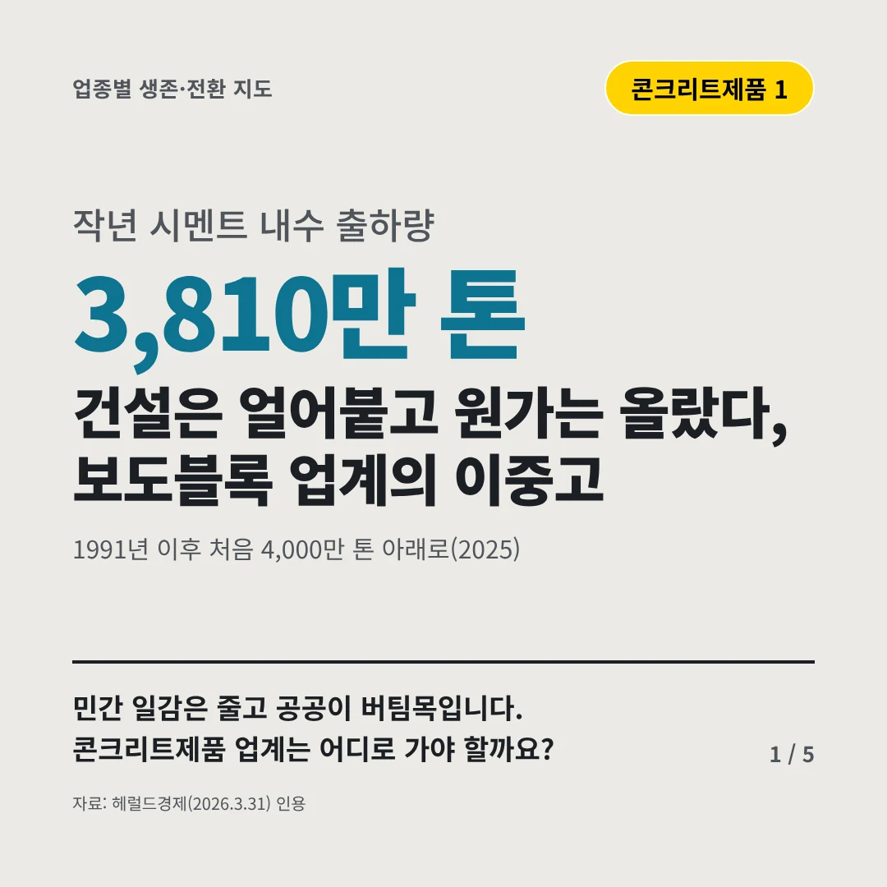
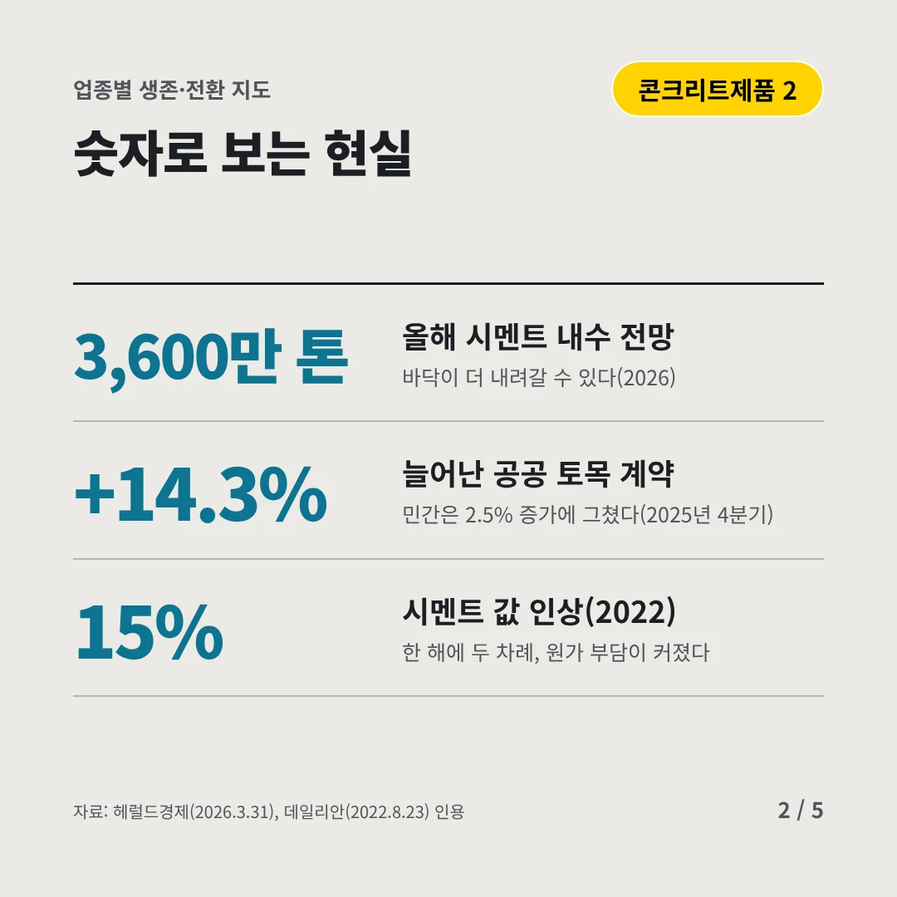
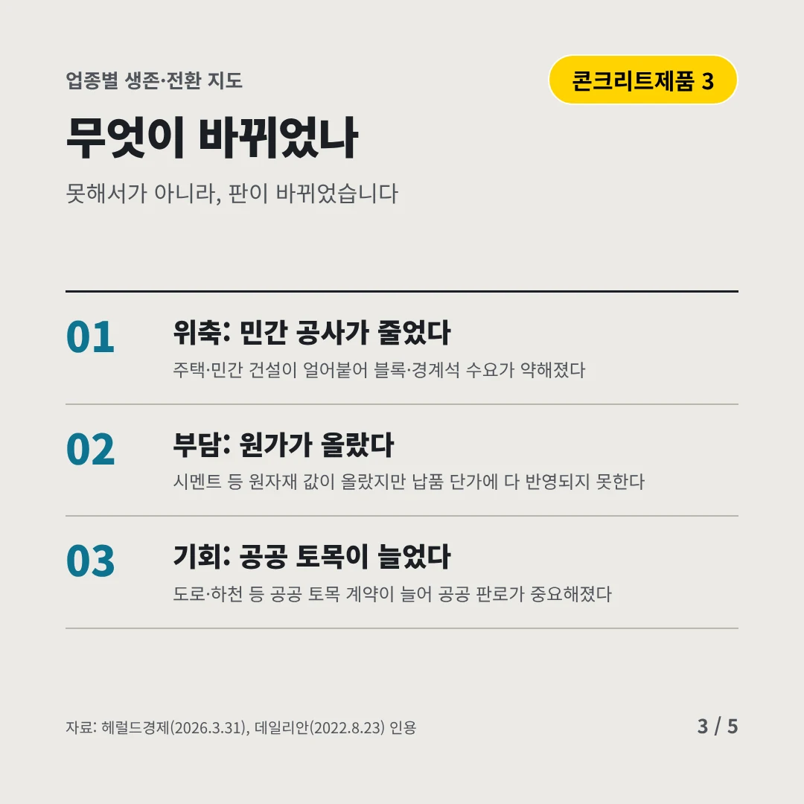
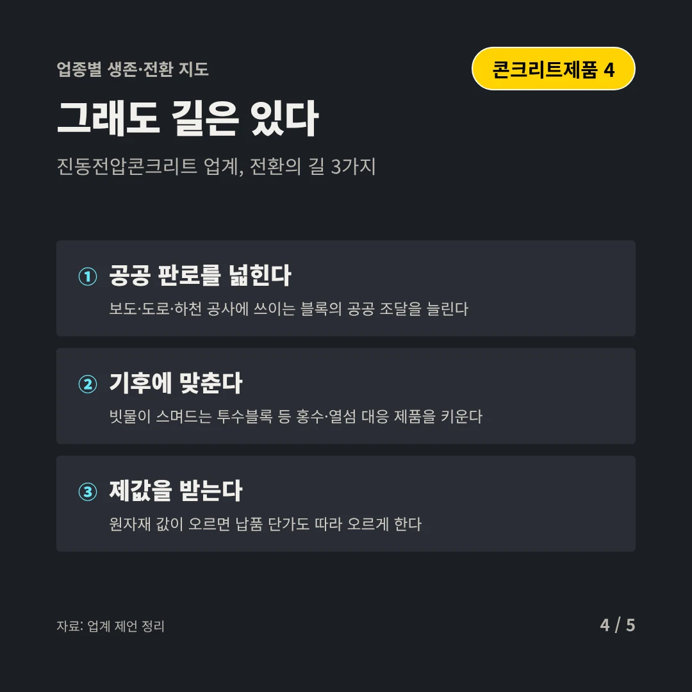
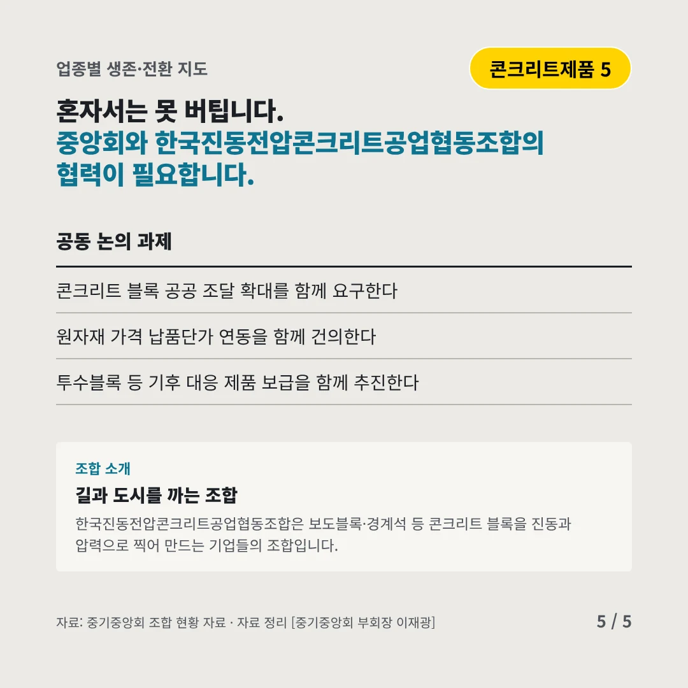
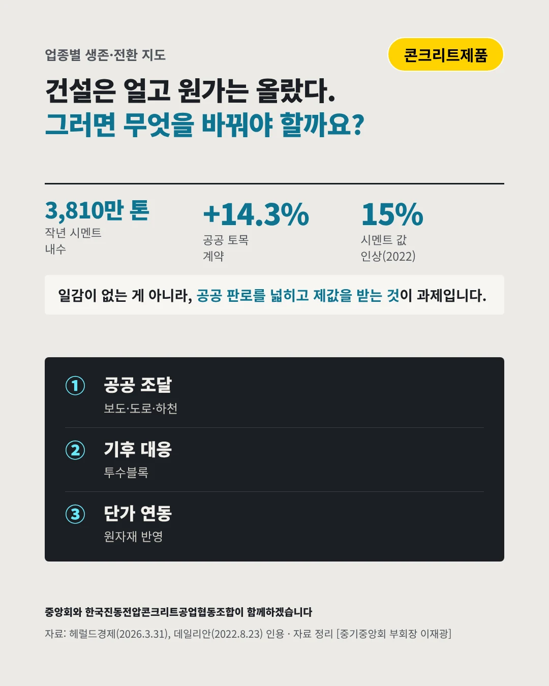

한국진동전압콘크리트공업협동조합
건설은 얼어붙고 원가는 올랐다, 보도블록 업계의 이중고
3,810만 톤 작년 시멘트 내수 출하량






민간 일감은 줄고 공공이 버팀목입니다. 콘크리트제품 업계는 어디로 가야 할까요?
숫자로 보는 현실
- 3,600만 톤올해 시멘트 내수 전망바닥이 더 내려갈 수 있다(2026)
- +14.3%늘어난 공공 토목 계약민간은 2.5% 증가에 그쳤다(2025년 4분기)
- 15%시멘트 값 인상(2022)한 해에 두 차례, 원가 부담이 커졌다
무엇이 바뀌었나
- 위축: 민간 공사가 줄었다주택·민간 건설이 얼어붙어 블록·경계석 수요가 약해졌다
- 부담: 원가가 올랐다시멘트 등 원자재 값이 올랐지만 납품 단가에 다 반영되지 못한다
- 기회: 공공 토목이 늘었다도로·하천 등 공공 토목 계약이 늘어 공공 판로가 중요해졌다
그래도 길은 있다
- 공공 판로를 넓힌다보도·도로·하천 공사에 쓰이는 블록의 공공 조달을 늘린다
- 기후에 맞춘다빗물이 스며드는 투수블록 등 홍수·열섬 대응 제품을 키운다
- 제값을 받는다원자재 값이 오르면 납품 단가도 따라 오르게 한다
한 장 요약

조합 소개
한국진동전압콘크리트공업협동조합은 보도블록·경계석 등 콘크리트 블록을 진동과 압력으로 찍어 만드는 기업들의 조합입니다.
자료: 헤럴드경제(2026.3.31), 데일리안(2022.8.23)